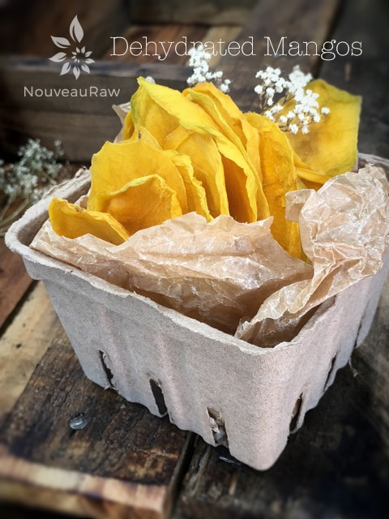

Dehydrated Mangos

~ raw, dehydrated ~
This really isn’t a recipe. More of a quick lesson on dehydrating mangos, (if you are new to it) and a reminder that is it good to revisit the simplicity of pure food. Granted, eating them fresh with juice running down into your socks would be even better. But dehydrated foods have their time and place.
I can remember back to when I was about 5 or 6 years old and we (parents and me) were at some grocery store in Albert Lea MN. I recall a rustic feeling to the place, not your typical fluorescent-lit grocery store with elevator music playing. I remember walking up and down isles of barrels that were filled with bulk foods. I wasn’t much taller than those barrels. As most children do… I found myself wandering off by myself, peering into all the clear lids.
Beans, beans, beans, rice, boring, rice, boring… Jack pot!! I hit the dried fruit section and I had a heyday. I ate to my tummies content. My belly was full and starting to ache, but all this free food! Soon, mom caught up with me… just as I was about to dive back into the raisin barrel. She was quick, within a blink of an eye, her hand was on mine and it was withdrawn from the barrel empty-handed.
Confused by the quick change of events, I peered up to her. She smiled, but told me that was a big NONO! That food wasn’t free. She asked how much I had eaten. I pulled up my shirt and there sat my distended tummy, with my belly button popped out indicating that I was done! My actions didn’t require a scolding… the belly ache that would take me well into the whee hours of the next morning was punishment enough. When we made our way to the sales clerk to pay for what went INTO the bag, I could hardly make eye contact with him. I just looked down at my belly which was half exposed. I looked at him. He looked at my belly, looked into my eyes and just smiled. No words needed to be exchanged. He knew that I had learned my lesson.
Back to the subject matter at hand… dried mangos. I rarely dehydrate mangos because when they are juicy and ripe, they are like nectar from the gods to me. But every once in a while, I am blessed with a crate full of them and the creative side in me can’t leave things in their natural state for too long.
Preparation:
- Start with ripe but not mushy mangos.
- Save the mushy ones for elbow-dripping eating or blend them to a magnificent pudding.
- Cut away any bruises. Bruises will make the dried fruit more brittle, transparent and not very flavorful.
- If the mangos are really hard, allow them to ripen some more first so you can get all the benefits they offer.
- Wash, dry, peel, and slice the mangos.
- I used a potato peeler but sometimes a paring knife is easier.
- To make the slices I recommend using a mandolin so that you get even cuts. This will cause them all to dry at the same rate.
- If you have thin and thick cuts, some will dry out too fast leaving you with shreds stuck to the mesh sheet.
- If you don’t have a mandolin, that is ok, just concentrate on making even cuts. Great time to “sharpen” those knife skills.
- After making the slices, you will be left with a fleshy pit. Doesn’t that sound attractive? haha Meaning… it is basically impossible to cut every bit off of the pit. Set those aside until you are done processing all of the mangos. Then roll up your sleeves, lean over the sink and make all sorts of slurpy snorts as you gnaw on the pits, stripping off all the excess flesh. Yum!
- Place the mangos on the mesh sheet that comes with the dehydrator. This will help them dry quicker.
- Dehydrate at 145 degrees (F) for 1 hour, then reduce to 115 degrees (F) for about 10 +/- hours.
- This will depend on the climate you live in, how thick or thin you sliced them, and how full the dehydrator is.
- Remove them before they get too brittle and dry. Allow them to cool before storing.
- Keep them in zip lock bags or well-sealed jars for up to a year.
- Store in a cool, dark place such as your pantry. I love how they retain such a vibrant color. Enjoy!
Culinary Explanations:
- Why do I start the dehydrator at 145 degrees (F). Click (here) to learn the reason behind this.
- When working with fresh ingredients it is important to taste test as you build a recipe. Learn why (here).
- Don’t own a dehydrator? Learn how to use your oven (here). I do however truly believe that it is a worthwhile investment. Click (here) to learn what I use.
© AmieSue.com